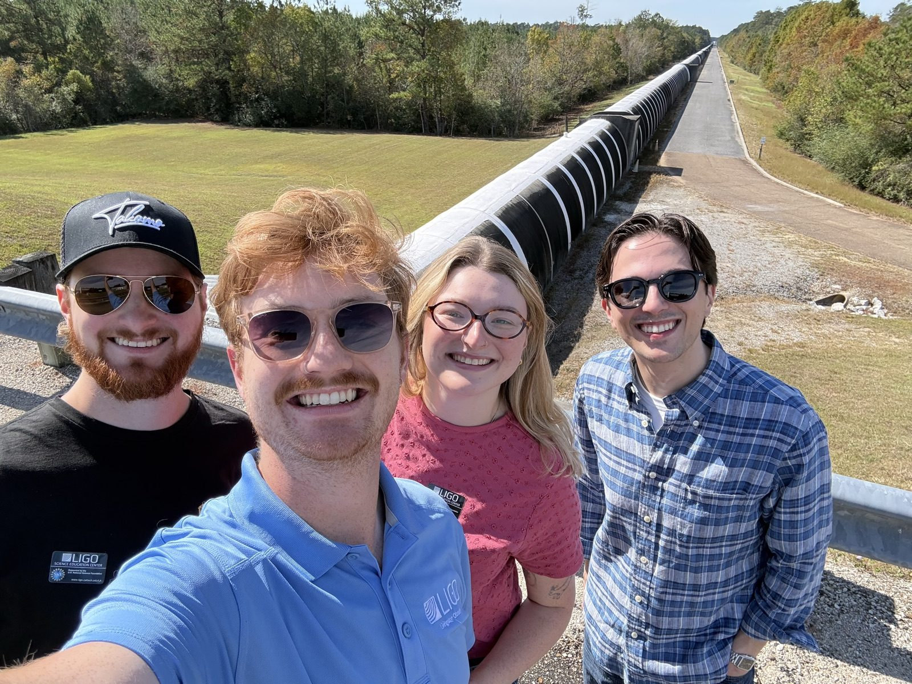
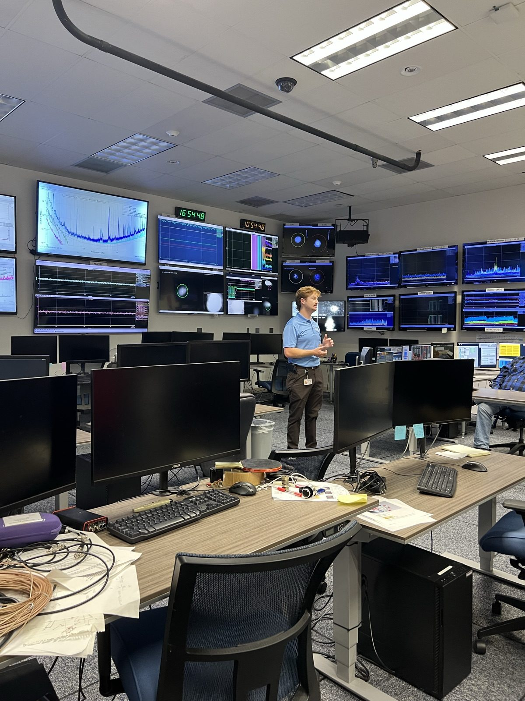

Teaching & Outreach
Teaching, mentoring and outreach
Since 2022 I have led monthly public Saturday Science Tours at LIGO Livingston, walking visitors along the detector arms and through the control room and explaining how the detector hears colliding black holes and neutron stars.


Teaching
- 2022–2023Astronomy Laboratory (ASTR 1109), Louisiana State UniversityTaught two sections a semester of 25 to 30 students each, with lectures on optics, stellar evolution, galaxies, cosmology and gravitational waves. Received the department's Outstanding Teaching Assistant Award.
Mentoring
- Summer 2023Andrew Valentini, REU studentMentored his research on PINCH. He is a coauthor of the PINCH paper and is now a graduate student at the University of Florida.
Service and leadership
- 2023–2025Deputy Data-Quality Shift Coordinator, LIGO Scientific CollaborationData-quality assessment and gravitational-wave candidate validation during the fourth observing run.
- 2023–2024President, LSU Graduate Student Organization
- 2019–2022Society of Physics Students, University of OklahomaPresident 2021–2022. Organized the department's first poster picnic for undergraduate researchers and gave outreach talks at local high schools.
- 2018–2022High School Leadership Conference, University of OklahomaCounselor and emcee for a three-day leadership program for more than 300 high school juniors.
- 2018–2022The Pride of Oklahoma Marching BandTrombone leadership team and Inclusivity Committee.